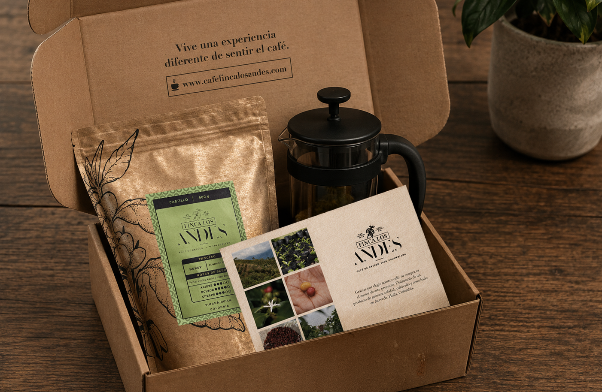

Café Finca Los Andes Packaging Case Study
Café Finca Los Andes came to me with a fun challenge: give their coffee packaging some fresh energy and let each variety show off its own personality — all without blowing up the production budget. They already had a logo they loved, so this wasn't about starting over. It was about building a smart little system around what they already had.
Where We Started
What They Needed
A packaging refresh that let each coffee variety show off its own personality — something their bags weren't doing yet.
The Challenge
Here's the catch: no fancy reprints allowed. A full-color redesign for every single variety just wasn't in the cards, budget-wise.
How I Solved It
Keep the bag itself simple — one ink color, printed straight onto the same material they were already using — and let a swappable label do all the heavy lifting. Cheaper to produce, easy to update, and suddenly each variety had a face of its own.
The Packaging System
From the bag itself to the postcard tucked inside the shipping box — how the whole thing came together, piece by piece.
The Bag — Front & Back
Up front, I kept it simple and let the little coffee plant that was already living in the logo take center stage — pulled out and given a bit more contrast so it actually pops on the shelf. That's it, that's the whole front. No extra noise, because the labels were about to do all the talking. Flip it over, and that's where the heart of the brand lives: a short message about the purpose behind the coffee, where it comes from, and the story of the brand's roots. The practical stuff lives there too — a nod to it being proudly Colombian coffee, the barcode, and the logo, sharing space with the story.
The Labels — Castillo, Caturra & Tabi
This is where the fun really happened. Three coffee varieties, three personalities. I dug into what makes each one different — how it grows, what it's known for — and let that shape the color and pattern of its label: green for Castillo, echoing the bean's own proportions; orange for Caturra, pulled from the plant's compact branching; and a warm yellow for Tabi, inspired by how it flowers. And they're not just pretty faces — each one also tells you exactly what you're buying, roast date, quality, and variety included.
The Box (And Everything Inside It)
The packaging story didn't stop at the bag. Their shipping box was still totally plain, so I gave it the same one-ink treatment — this time in blue — with the logo front and center. Open it up and there's a little surprise waiting: an interactive message tucked inside for whoever's unboxing it. I also designed a postcard with real photos of the coffee and the farm it comes from, plus packaging for a few of the other coffee products they sell — because the whole experience deserved the same amount of love as the bag itself.
How I Worked
From that first conversation to print-ready files — here's how it all came together.
Getting to know the brief
Sat down with the client to really understand the ask: refresh the packaging around a logo they already loved, and give each coffee variety its own personality, all within a tight budget.
Getting to know the coffee
Dug into the character of the Castillo, Caturra, and Tabi varieties, so each label's look could be grounded in what actually makes that coffee different.
Finding the budget-friendly fix
Landed on single-ink printing straight onto the existing bag material, and moved all the variety differentiation onto the labels instead.
Proposals & iteration
Before anything went near a printer, I put together three different design directions for the client to react to. From there it was a few rounds of feedback and back-and-forth — tweaking colors, layout, little details — until we landed on the direction that felt exactly right and got the final green light.
Designing the whole experience
Brought the approved direction to life across everything: the three variety labels, the story on the back of the bag, the box's single-ink exterior and interior message, and a postcard built around real farm photography.
Handing off print-ready files
Delivered production-ready files for the bags, labels, box, and postcard, keeping that single-ink rule front of mind the whole way through.
What This Project Taught Me
Café Finca Los Andes needed packaging that felt thoughtful without adding cost to every single order they shipped. Turns out, the fun part was designing around that — putting the color and personality where it was cheapest to produce, the labels, and saving the storytelling for the moments a customer actually lingers: flipping the bag over, opening the box, reading the postcard. A tight budget, it turns out, is just a design brief in disguise.
Let's work together
Need packaging that looks like it had a bigger budget than it actually did? Let's talk.